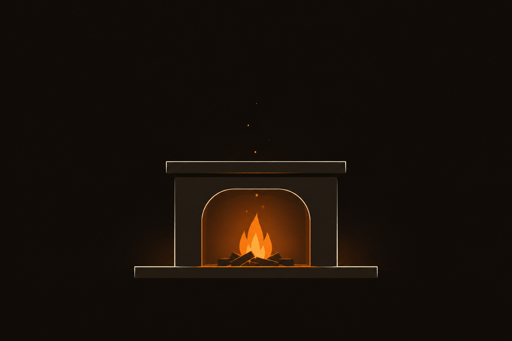
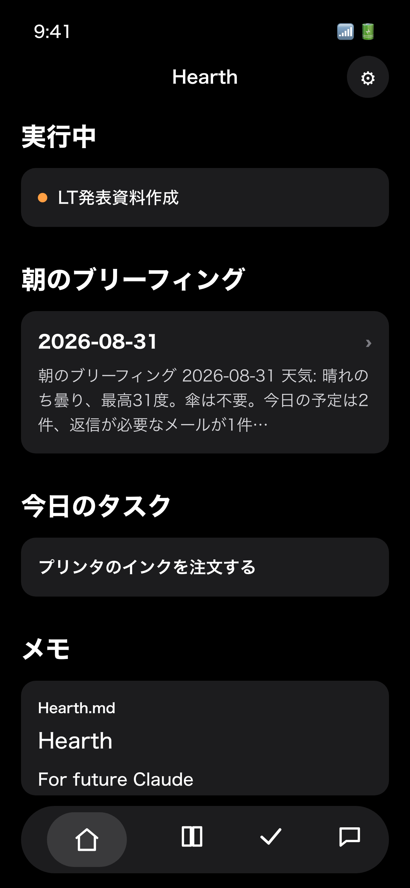
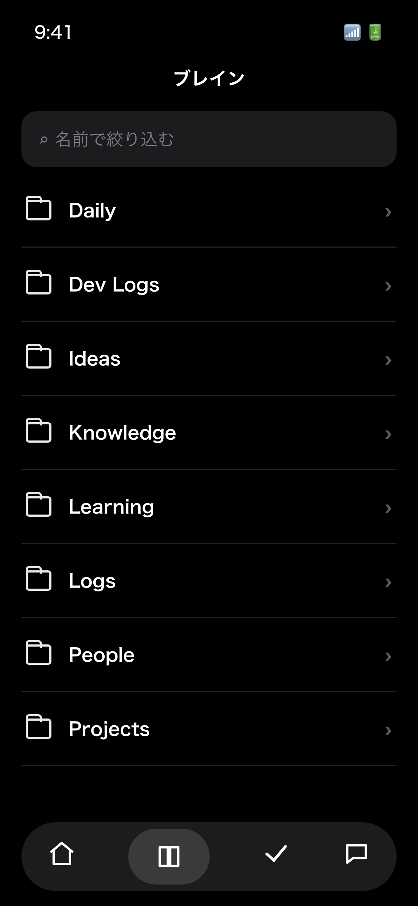
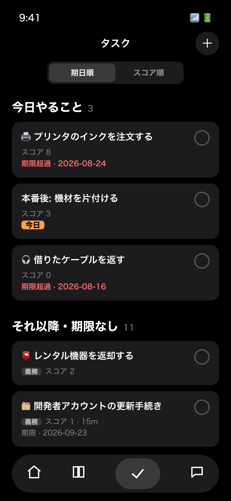
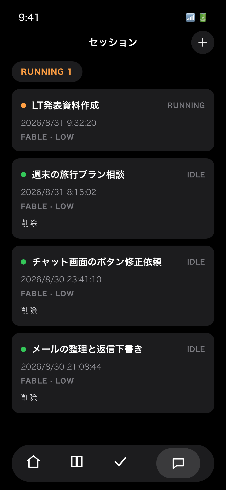
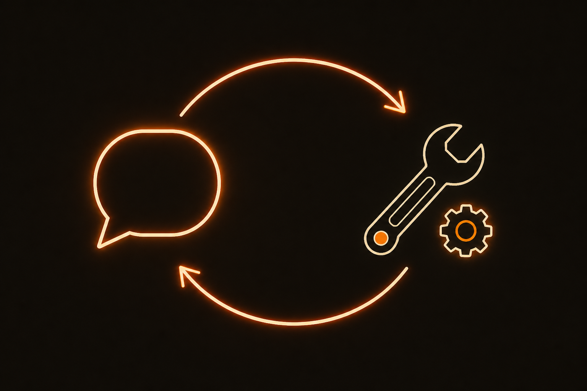

自己成長していくアプリを開発して、
日常生活のあらゆることを自動化した話
2026/08/31 古瀬就悟 / ソングLT会
もう予約サイトを開かない
「帰省するときの
交通手段をとって」
スマホでこう打ちました。家に着いた頃には、カレンダーから帰省の予定を拾って、交通手段を調べて価格を比較して、予約まで終わっていました。
自分がやったのは一文打っただけです。
同じ要領で
- 花火大会のチケット購入
- 大学院の履修の突き合わせ
- コンビニ到着時の受け取り通知
- 毎朝のブリーフィング
あらゆることを自動化している。
この「あらゆること」には
アプリの開発そのものも含まれます
夜、「このボタン押しにくい」と言って寝ると、翌朝には直っています。
その間、自分はコードを書いていません。
Hearth
スマホから、自宅のMacにいる Claude Code を動かすアプリを作りました。

ブリーフィング

直接見る

同じリストを読み書き

全部ここで言う
全体アーキテクチャ
LLM Wikiを頭脳として用いる
取り込むたびに書き換わるから、
使うほど賢くなる
LLM Wikiは、AIが読み書きする前提で書いたMarkdownのノート群です。Andrej Karpathyが言い出した考え方で、実装が増えています。
実家の場所、帰省の予定、店の好み、過去の判断が全部ここに書いてあって、エージェントは毎回これを読んでから働きます。
「帰省するときの交通手段をとって」の雑な一文が通じるのは、このためです。
なぜLLM Wikiなのか
溜める記憶も圧縮する記憶も、
時間が経つと腐るから
- 会話をひたすら溜めて検索する方式 (Hermes Agent など) は、古い状態と新しい状態が混ざって、どれが正しいか分からなくなる
- 記憶を自動で圧縮して足していく方式 (Claude Code のメモリ機能など) は、何をどう覚えたかを確認も修正もできない。間違って覚えても、直せないまま積み上がる
- Wikiは取り込むたびに書き換えるので、時間が経っても嘘にならない知識だけが残る。流動的なタスクはSQLiteに出して、MCPで繋いだ
機能が追加される仕組み
- チャットで不満を言う
- Claudeがissueを起票
- 開発エージェントが実装 → テスト → レビュー → デプロイ
開発自動化の流れ
これが一番衝撃でした
ユーザーがアプリを作れる人になってしまう
AIで開発が早くなる、と言っても、間にはなんだかんだエンジニアが必要でした。
アプリに要望を打ち込むと更新されたアプリが返ってくる、となると、その間に誰もいらない。

アプリの中にチャットがあって、
そこで話すと開発が進む
この形が当たり前になったら面白いと思っています。
デモ
ご清聴ありがとうございました
付録: 開発自動化で一番苦労したこと
issueを書かせすぎると、
開発が遅くなる
- Fableに書かせるとうまくいくのに、Opusに書かせると実装の細部まで書きすぎる。それがCodexに渡るとさらに倍増して、普通ありえないケースの検証だらけの実装になった
- 対策: issueには「何をしてほしいか」と「なぜ」だけを書かせる。実装には踏み込ませない
付録: レビューエージェントも暴走する
ありえない攻撃に、
ありえない対処を求めだす
- 「攻撃者がこんなニッチなところを突いてくる」という非現実的な指摘と、その対処をレビューで量産して、全然使いものにならなかった
- 対策: 「具体的に何をレビューしてほしいか」を明記して絞る
なぜ Hermes Agent / OpenClaw を使わなかったか
実際に試したら、
タスクがこなせなかった
- スマートEXにログインすらできなかった
- モデルは同じ。差が出るとしたらハーネスの違い
- ベンチマークを見にいったら、Claude Code のハーネスがトップを取っていた。ここが強いんだと思う